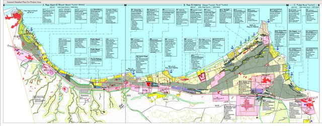
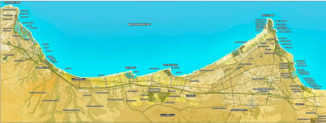

Urban planning and design in North Coast, Egypt.
PUD has 15 projects in North Coast, Egypt between 1978 and 2023. They include Regional Vision for the North Coast and Tourism Development Master Plan for Fuka-Matrouh, Marina Matrouh Tourist Centre and Marina El Alamein. The work spans landscape, masterplan, mixed use, regional planning and tourism.
 Regional Vision for the North Coast and Tourism Development Master Plan for Fuka-MatrouhFuka-Matrouh sub-region, North Coast · 2011
Regional Vision for the North Coast and Tourism Development Master Plan for Fuka-MatrouhFuka-Matrouh sub-region, North Coast · 2011 Marina Matrouh Tourist CentreMarsa Matrouh, North Coast · 1994-2004
Marina Matrouh Tourist CentreMarsa Matrouh, North Coast · 1994-2004 Marina El AlameinNorth Coast · 1985-1997
Marina El AlameinNorth Coast · 1985-1997 Ramla Concept Master PlanNorth Coast · 2023
Ramla Concept Master PlanNorth Coast · 2023 Al Alamein Riviera Vision Master PlanNorth Coast (New Alamein) · 2022
Al Alamein Riviera Vision Master PlanNorth Coast (New Alamein) · 2022 Madaar Ras El Hekma (Azha Ras Al Hekma)Ras El Hekma, North Coast · 2022
Madaar Ras El Hekma (Azha Ras Al Hekma)Ras El Hekma, North Coast · 2022 Fanarah Tourist ResortJefeira, North Coast · 2016
Fanarah Tourist ResortJefeira, North Coast · 2016 Marina Matrouh Tourist Centre, Phase 3Marsa Matrouh, North Coast · 2004
Marina Matrouh Tourist Centre, Phase 3Marsa Matrouh, North Coast · 2004 Marina Matrouh Tourist Centre, Phase 2Marsa Matrouh, North Coast · 2000
Marina Matrouh Tourist Centre, Phase 2Marsa Matrouh, North Coast · 2000 Marina El Alamein Tourist Centre: Concept Master PlanNorth Coast · 1986
Marina El Alamein Tourist Centre: Concept Master PlanNorth Coast · 1986
Structure Planning for the North West Coast RegionNorth West Coast · 1982
Tourism Development Planning for the North West Coast RegionNorth West Coast · 19782022ETAP Tourism DevelopmentRas El Hekma · 20221992Marina El Alamein Tourist Centre (Phase 3): VeniciaNorth Coast · 19921984Planning of the Region between Maxx District (8th km) and the 34th km West of AlexandriaWest of Alexandria · 1984